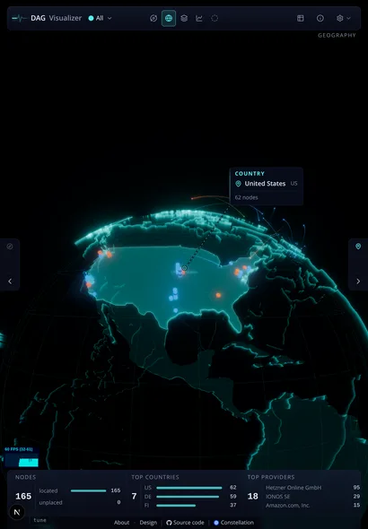
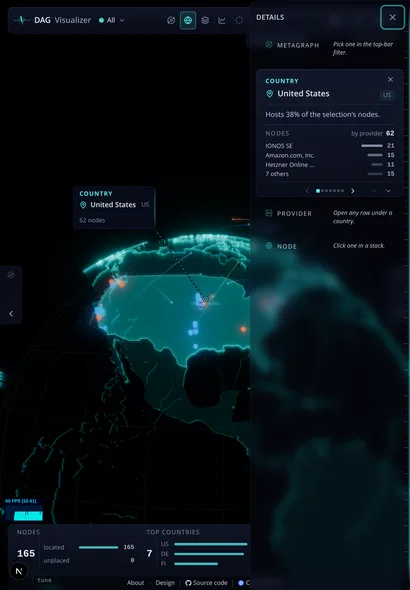
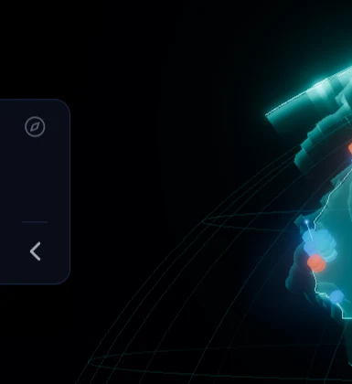
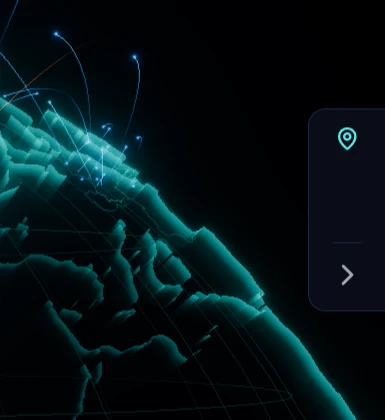

The control that opens and closes the Explore and Details sheets on tablet (700–1099px). Drawn at half
scale on an 820-wide tablet. Each option shows the tabs closed, then with Details open.
0Now
Closed: a 44×116 slab per edge. It keeps a fixed three-slot icon frame so the two sides match, which leaves most of the slab empty. Below a hairline sits a chevron that points toward the screen edge on the Explore side.
Open: the tab disappears and the sheet grows a "DETAILS" heading with a boxed × at the top corner. Opening and closing therefore use two different controls in two different places.
closed

Details open

the tabs, 1:1


AA slim grip
Each edge shows only a short rounded grip, about 4px wide, with an invisible 44px hit area. An unseen update shows as one dot above it.
When open, the grip rides the sheet's inner edge. Tap or drag it to close, with no heading or ×.
Trade-off: it is the most minimal, and the least discoverable. It reads as "something is there" more than "Explore".
closed
Details open
Metagraph
COUNTRYUnited States
Provider
Node
BA labelled spine
The tab carries its word, set vertically ("EXPLORE", "DETAILS"), with an update dot. There is no icon tray and no chevron, because the word is the affordance.
When open, the sheet keeps today's head row (word + ×).
Trade-off: it is the most legible closed state, but vertical type is slower to read and the tab stays about 110px tall.
closed
Explore
Details
Details open
Explore
DETAILS
Metagraph
COUNTRYUnited States
Provider
COne tab that travels with its sheet
Closed: the tab shrinks to its content: the panel's icon, an update dot when something changed, and a chevron pointing into the scene, the way the sheet will come. No fixed three-slot frame, no hairline.
Open: the same tab slides out with the sheet and sits on the sheet's inner edge, its chevron flipped to point back. Tapping it again closes the sheet. The heading row and its boxed × go, which gives the sheet that height back.
One control, one place, two states: the same "tap the thing again to collapse" the phone dock already uses. Escape and the × for keyboard and screen-reader users stay as accessible names on the tab.
closed
Details open
Metagraph
COUNTRYUnited States
Provider
Node
The open tab is the sheet's handle, the same idea as the phone's dock half: the control you opened with is the one that closes.
C2C, with the chevron alone recommended
Your note on C: the panel icon and the chevron sit stacked like one icon set, though one names the panel and the other is the control. C2 keeps only the chevron. It is the control and the whole tab, pointing into the scene when closed and back out when open.
An unseen card update is a single accent dot on the tab's scene-facing edge, a signal rather than a second glyph.
Which panel is which is told by side, as now: Explore on the left, Details on the right. The accessible name still says it.
closed
Details open
Metagraph
COUNTRYUnited States
Provider
Node
C3C, with the panel's icon alone
The other way to make it one glyph: keep the panel's own icon (the compass, the list) and drop the chevron. Open or closed is told by the tab's position (on the screen edge vs on the sheet's edge) and an accent wash while open.
This names the panel at a glance and matches the phone dock, which uses the same icons. The trade-off is that nothing says "this slides", so the first tap teaches it.
closed
Details open
Metagraph
COUNTRYUnited States
Provider
Node
DNo edge tabs: two toggles in the top bar
The edges stay clear. Two panel toggles (Explore, Details) join the top bar's right-hand group, the same buttons desktop has for scene mode, and are lit while their sheet is open.
Trade-off: the edges are fully free for the scene, but the controls move far from where the sheets appear, and the top bar is already full at 820px.